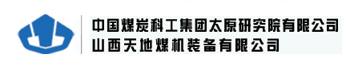
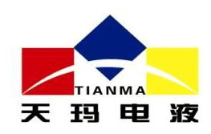
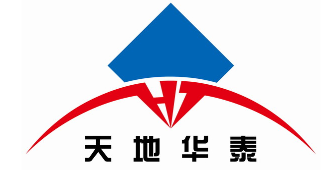

管理提升活动月度展示2018年7月
活动总体状况

从7月1日以来管理提升活动步入了第三环节，进入持续改进的实施阶段。
集团领导持续高度重视，每天从信息系统查阅相关信息，定期询问活动进展和问题。各参与方积极开展工作，稳步实施，取得了一定成果。 截止7月31日晚，在执行立项共548个，改进项共1621项，其中7月新增立项21个，改进项68项，平均完成率为13.0%，共完成改进项149项，制定上传相关文件、文档126个。
进入8月，各部门和单位要按照集团对管理提升活动的要求，对照第二环节立项，紧跟计划进度，高质量推进提升活动，真正使此次管理提升见成果，出成效。
二级单位活动展示
太原研究院
- 
成绩
持续自检，持续立项，持续改进。
1、持续发现问题，持续立项，持续改进
在首批提交提升立项后，公司开展第二轮问题查找，力争覆盖公司全部工作 和各个环节。根据“基础在先、面上联动、重点突破、追求实效”的工作原则，提交了第二批提升项目。 第二批新增立项8个，改进项30条。
2、通过培训提高了认识，更新了理念
公司邀请通用电气中国国际智能制造技术示范中心精益专家，培训了包括公司高管层、中层领导在内的员工 共245人。培训内容包括精益思想和智能制造的演变过程、智能化和数字化案列、精益化工厂游戏等，分析了波音、佳能、丹 纳赫等典型案例，学习了流程再造的实施方法等。此次培训开阔了思路，更新了理念，学习了方法，达到了预期目标。
3、充分调动公司全体员工参与的积极性，意见和建议覆盖全流程
公司征求意见和建议阶段，共收集到意见和建议214条，精益管理培训中收集到 300条，通过整理、讨论，筛选出意见和建议六大类50条，其中综合管理类17条，科研管理类12条，生产管理 类8条，质量管理类1条，采购管理类5条，经营管理类7条。公司领导最终确定其中15项为2018年管理提升项目， 均已制定实施进度计划。
经验做法
1、领导重视是一切工作的基础
尤其是管理工作，如果领导直接参与，则能更直接地推动工作的开展；
2、全员参与是工作的重点
充分调动员工的参与积极性，在实施阶段的阻力就会大为减轻；
3、部门间的沟通和支持是开展工作的必要条件
提前沟通，过程中协商，出现问题共同解决。做好这三方面的工作，管理提升工作一定能够做好。
优秀改进项
管理提升项目中，降低库存项目是较有代表性的优秀管理提升项目。 目前，山西天地煤机装备有限公司库存较高，经营压力较大，对此，公司也采取了各种措施，但是效果不明显，此次管理提升活动把该项工作列入15项管理提升项目中，生产管理部经过综合分析，认为系统问题，需通过推、拉两个方面去解决。遵循此思路，制定了以下提升措施； 1、修订《生产绩效考核办法》，把降低库存作为实体单位考核指标，量化库存指标； 2、深入分析库存结构、原因和近几年库存消耗情况； 3、根据分析情况按照门类分别制定解决措施，切实执行《消耗长期未领用库存物资奖励办法》奖励到个人，实现降低库存目的。
工作建议
下个阶段，公司领导小组办公室将按照进度节点加强监督，与相关单位定期 沟通，及时获得工作进展，遇到问题，加以协调，特殊情况下，报领导小组给予 处理。如果出现进度计划制定的偏差过大，经领导小组 批准，进行调整，以实际达到管理提升效果为目的。
天玛公司
- 
重点成绩
所有改进项目按期完成。
1、在营销模块：对长期战略客户进行了目标用户甄选；进行了体系机构调整 ，形成销售服务主体，细化利润单元，为建立销售单位考核体系及制度打下基础。
2、在管理模块：制定了组织机构调整方案；通过框架设计及制度梳理形成了公司制度体系清单；完成了规范行政公文处理流程和建立健全成本核算体系的基础准备工作；通过完善信息化管理 ，实现了主要信息化系统集团化管理、成本多维度管理和销售报价管理。
经验做法
通过多年的探索与尝试，天玛公司现已初步建立了部门KPI、员工360°绩效考核体系，考核部门结合公司领导班子在年初制定的公司年度工作目标、深化改革 重点任务以及每个部门的重点工作为公司各部门制定考核指标。集团公司发起的管理提升活动更加 清晰了公司的考核理念，从工作目标制定阶段开始，各责任部门便较为迅速的进入工作状态，通过自 我诊断立即明确了工 作目标并细化分解，并在公司活动领导小组“两上两下”最终审定后，即刻开展工作。
优秀改进项
2015年6月天玛公司重新实施并上线了SAP ERP系统和泛微OA系统。随着 公司发展，系统上线时的功能已不能满足业务需求。本年度天玛公司对系统实施了集团化管 理功能，实现业务协同和内外部信息互联。同时在SAP ERP系统进行了新的功能配置和表单 开发，全面梳理了成本核算体系，实现 了按照项目、客户、产品、成本中心多维度进行成本/收入分析的管理模式。
此外，多年来天玛公司销售询报价管理靠手工进行。为了实现业务规范化 、流程化、电子化管理，对SAP系统进行二次开发和功能扩展，实现了系统依据基准价、折扣率 、加成率等信息，快速计算出有效销售价，大大提高了销售人员的工作效率和报价的透明度；根据管理需求 ，SAP与OA也做了流程集成开发，实现了流程审批后数据权限控制功能。
天玛公司对信息化管理开展的改进提升，大大提高了各项工作的效率与质量，为公司完成各项工作目标提供了坚实的基础。
工作建议
希望集团公司活动领导小组办公室能够适时深入各家企业，对提升活动进行指导，体察各家所需，为工作难度较高的提升目标提供支持。以点带面，打造形成中国煤科高质量的发展运行管理体系。
天地华泰
- 
重点成绩
管理提升立项实现了三个“全覆盖”。
1、管理提升目标和改进项实现了管理层级和人员全覆盖
管理层级涉及10个公司总部职能部门、2个子公司以及7个生产运营项目部。
2、管理提升目标和改进项实现了管理内容全覆盖
管理内容涉及行政办公、人力资源、财务资金、风险防控、内部审计、战略规划、机构设置及岗位职责、市场营销、安全生产、科技创新、纪检监察、物资采购、劳动保护、工会、生产运营管理等各个方面。
3、管理提升目标和改进项实现了提升类型全覆盖
按照管理提升活动工作计划，天地华泰各部门、子公司及项目部通过自我诊断、准确对标、查找问题，明确各类提升目标共计40项，其中改善类的提升目标23项、基础类的10项、执行类的5项、突破类的2项；制定各种改进项（或改进措施）共计123个，其中改善类的改进项71个、基础类的31个、执行类的13个、突破类的8个。
经验做法
1、组织保障
一方面公司成立了领导小组和办公室等工作机构，另一方面公司领导真正做到身体力行抓落实。公司董事长和总经理领衔主抓2项突破类管理提升目标，公司其他分管领导主抓各自分工范围内的管理提升目标。
2、责任保障
实现了管理责任全覆盖，每个部门、每个单位均明确了第一责任人和联络人，任务层层分解，责任落实到人，时间节点明确，真正做到“家家有指标、人人扛重担”。
3、作风保障
坚持“真抓实干、马上就办”的工作作风，注重决策执行的效率和效果，使工作安排部署件件有落实、事事有回音、项项有结果，把工作真正落到实处。
4、信息保障
建立有效的信息沟通渠道是管理提升活动顺利开展的重要保障。天地华泰建立了覆盖各部门、各单位的管理提升活动OA讨论专区和微信群，及时发布和收集管理提升活动相关信息，督促各个改进项按照时间节点保质保量完成。
优秀改进项
天地华泰优秀改进项以《机电动力部修订完善生产性物质管理系列制度》为例进行展示。
已经完成改进项1——开展调研。组织整理公司现有各类管理文件及制度，组织相关人员学习、讨论，查找存在的问题和不足；深入各项目部了解物资管理方面的意见或建议；组织学习或调研优秀单位管理上的成熟经验和做法。
已经完成改进项2——组织修订公司生产性物资管理办法、采购管理办法、计划管理办法、招标管理办法、供应商管理办法等系列制度，完成征求意见稿。
工作建议
进一步加强公司各职能部门管理提升活动的组织协调，进一步加强对子公司、项目部等基层单位管理提升活动的业务指导和监督检查。